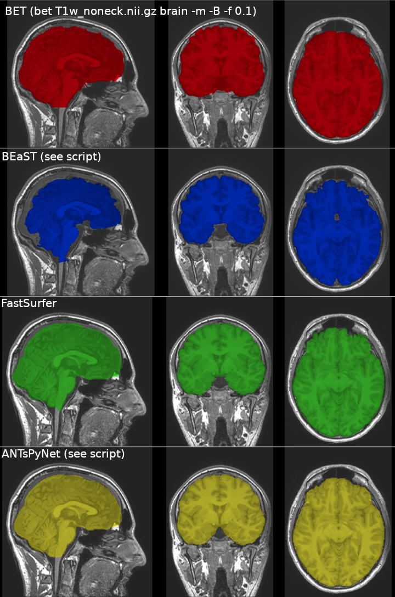

Anatomical
Registration
This is a large topic, and you probably want to check out ANTs
But here is a nice tutorial to get you started on the ideas (linear, non-linear, inverse, apply warp, etc.)
https://fsl.fmrib.ox.ac.uk/fslcourse/graduate/lectures/practicals/registration/
Make your own template:
Or try ANTs: antsMultivariateTemplateConstruction2.sh
Tips
Generally you want to register low to high resolution. Then, if that isn't he actual direction you want to go, you would invert the registration matrix and apply it in the oppposite direction.
Bias Field Removal
See ANTS
Neck removal
FSL Robust FOV will remove lower head and neck, which might help with later stages in brain extraction
robustfov -i <input> -r <output>Brain Segmentation / Skull Stripping
Brain extraction is one of the most important preprocessing steps in MRI analysis. The accuracy of brain segmentation is largely dependant on the precision of the brain extraction procedure used to remove non-brain tissues including scalp, fat, muscle, neck and eyeballs from head MR images.
Developed methods for automatic brain extraction from adult brain MR images are classified into:
- Mathematical morphology-based methods
- Intensity-based methods
- Deformable surface-based methods
- Classification-based methods
- Atlas-based methods
Mathematical morphology-based methods
Sensitive to size and shape of structure elements used in morphological operations.
Intensity-based methods
The intensity bias caused by low resolution, low contrast, high imaging artefacts and high levels of noise reduces the accuracy.
Deformable surface-based methods
The performance depends on the noise level and the initial location of the evolving surface.
Classification-based methods
Atlas-based methods
Most errors are due to registration errors. To reduce these errors, multi-atlas-based brain extraction methods have been proposed.
Comparison of methods
"The overall analysis of the skull stripping techniques against the “silver-standard” consensus showed that STAPLE, ANTS and BEaST achieved the highest Dice coefficient metrics and had smaller variance (standard deviation), therefore they have high agreement with the consensus mask and their performance was consistent. STAPLE's Dice coefficient was significantly different compared to all the methods, except for ANTs and MBWSS.
The Dice coefficient metric represents a compromise between sensitivity (including brain tissue) and specificity (not including non-brain tissue). STAPLE, OPTIBET, BEaST and ANTS were found to be robust techniques; their Dice coefficients were higher than 0.9 for all 359 subjects assessed (Table 7). BSE, BET are the less consistent (robust) with higher standard deviations. MBWSS has the fourth highest Dice coefficient, it suffers from failing in some cases (13 subjects; Dice <0.9) by leaving a big portion of the brain out of the segmentation mask. If we excluded these failures, MBWSS would have an average Dice coefficient of 97.58 1.4 ± 9, which is close to the results obtained by ANTs and STAPLE."
My own attempts, looking at ANTsPyNet, optimized bet, BEaST, and FastSurfer are as follows:

BET
The go-to method (although probably shouldn't be)
See FSL's page
See this paper on optimizing: https://pubmed.ncbi.nlm.nih.gov/22484407/
"The removal of the neck slices, either externally or within BET, has a marked positive effect on the brain extraction quality. BET option "B" with f=0.1 after removal of the neck slices seems to work best for all acquisition protocols. "
robustfov -i T1w.nii.gz -r T1w_noneck
bet T1w_noneck.nii.gz brain -m -R -B -f 0.13dSkullStrip (AFNI)
To run, type 3dSkullStrip to get a list of inputs/parameters
Basic run:
3dSkullStrip -input input_image.nii.gz -prefix output_image.nii.gz[note: final product may be deobliqued and no longer align with original image…]
OR you can run @SSwarper [note: takes about 1hr]:
@SSwarper -input ../T1w.nii.gz -base MNI152_2009_template_SSW.nii.gz -subid sub-001 -odir group/o.aw_sub-001[note: final product may be deobliqued and no longer align with original image…]
ANTs
https://andysbrainbook.readthedocs.io/en/latest/ANTs/ANTs_Overview.html
https://dpaniukov.github.io/2016/06/06/brain-extraction-with-ants.html
antsBrainExtraction.sh -d 3 -a sub-001_T1w_202.nii.gz -e brainWithSkullTemplate.nii.gz -m brainPrior.nii.gz -o anat_Stripped.niiThe option “-d 3” means that it is a three-dimensional image; “-a” indicates the anatomical image to be stripped; and “-e” is used to supply a template for skull-stripping. (which ones?) “-m” will generate a brain mask, and “-o” is the label for the output.
Templates can be downloaded here: https://figshare.com/articles/dataset/ANTs_ANTsR_Brain_Templates/915436
[note: final product may be aligned to the template you use and no longer aligned with original image]
ANTsPyNet
I actually prefer this version of ANTs Brain Extraction to the above.
https://github.com/ANTsX/ANTsPy
and https://github.com/ANTsX/ANTsPyNet
pip install antspyx
pip install antspynetIn Python:
from antspynet import brain_extraction
import os
from ants import atropos, get_ants_data, image_read, resample_image, get_mask
example_filename = os.path.join('../..', 'T1w.nii.gz')
images = image_read(example_filename)
probability_brain_mask = brain_extraction(images, modality="t1")
probability_brain_mask.to_file('antsbrainmask.nii.gz')Bash:
flirt -in antsbrainmask.nii.gz -ref ../../T1w.nii.gz -out antsbrainmask_orig.nii.gz -applyxfm -usesqform
fslmaths antsbrainmask_orig.nii.gz -thr 0.5 -bin antsbrainmask_orig.nii.gz
fslmaths antsbrainmask_orig.nii.gz -mul ../../T1w.nii.gz antsbrain.nii.gzOr just use this one simple script: https://github.com/WeberLab/SkullStrip_ANTsPyNet/tree/main
BEaST
BEaST is a software toolkit to extract brain from hight resolution T1 images. BEaST refers to Brain Extraction based on non-local Segmentation Technique which was published in Neuroimage by Eskildsen and colleagues (Eskildsen et al, 2012).
Installation and tutorial can be found here:
https://rpubs.com/conge/beast_intro
Citation: Simon F. Eskildsen, Pierrick Coupé, Vladimir Fonov, José V. Manjón, Kelvin K. Leung, Nicolas Guizard, Shafik N. Wassef, Lasse R. Østergaard, D. Louis Collins, and The Alzheimer's Disease Neuroimaging Initiative, BEaST: Brain extraction based on nonlocal segmentation technique, NeuroImage, vol. 59(3), pp. 2362-2373. ISSN 1053-8119, 10.1016/j.neuroimage.2011.09.012.
Installation on Ubuntu:
Dependencies
- You might need these installed:
sudo apt install cmake-curses-gui- First install MINC
cd ~/Downloads
wget http://packages.bic.mni.mcgill.ca/minc-toolkit/Debian/minc-toolkit-1.9.18-20200813-Ubuntu_20.04-x86_64.deb
sudo dpkg -i minc-toolkit-1.9.18-20200813-Ubuntu_20.04-x86_64.deb
source /opt/minc/1.9.18/minc-toolkit-config.sh
export LIBMINC_DIR=/opt/minc/1.9.18/lib/cmake/[note: please add source /opt/minc/1.9.18/minc-toolkit-config.sh into your bashrc file so you don't have to do it every time before running the toolkit:]
echo "source /opt/minc/minc-toolkit-config.sh" >> ~/.bashrc;[NOTE: if the above doesn't work, try: https://github.com/BIC-MNI/minc-toolkit-v2 ]
- Install NIfTI libraries
sudo apt-get install libnifti-dev- Install library for Hierarchical Data Format 5 support
sudo apt-get install libhdf5-devBEaST Proper
- Download source code:
cd ~/Downloads
gh repo clone BIC-MNI/BEaST #note: this uses the git hub cli client; see [[[git]]]
cd BEaST- Compile and Install BEaST
Run the code below to configure the installation.
ccmake CMakeLists.txtAt the step, you need to make sure all the path is correct in the CMakeList.txt. Type “c” to configure the installation and type “g” to generate configuration. If everything is correct, runt the code below to install BEaST to your system.
For me, I needed to edit and include: /opt/minc/1.9.18/lib/cmake/
More Troubleshooting:
- NIFTI_ROOT should be set to /usr if you installed NIfTI libraries
using the package libnifti-dev
- If the compiler cannot find hdf5.h you probably need to install
libhdf5-serial-dev
- If you get the message: "Could not find module FindLIBMINC.cmake or
a configuration file for package LIBMINC.", you must point to the
directory containing either FindLIBMINC.cmake or
LIBMINCConfig.cmake. If you have installed MINC Tool Kit,
http://www.bic.mni.mcgill.ca/ServicesSoftware/ServicesSoftwareMincToolKit ,
the directory is most likely /opt/minc/lib
- make sure fsl's path isn't before your major ones: put this at the very end of your ~/.bashrc file:
export PATH=/usr/local/sbin:/usr/local/bin:/usr/sbin:/usr/bin:/sbin:/bin:$PATH
make
sudo make install- Install BEaST Libraries
cd ~/Downloads
wget http://packages.bic.mni.mcgill.ca/tgz/beast-library-1.1.tar.gz
tar xzf beast-library-1.1.tar.gz
sudo mv beast-library-1.1 /opt/minc/1.9.18share/Script to run BEaST:
#!/usr/bin/env bash
#
# BEaSTSkullStrip.sh
# Using BEaST to do SkullStriping
# [see here](https://github.com/FCP-INDI/C-PAC/wiki/Concise-Installation-Guide-for-BEaST) for instructions for BEaST.
#
# Qingyang Li
# 2013-07-29
# With major edits from Alex W
#
# The script requires FSL, AFNI, BEaST, and MINC toolkit.
SECONDS=0
MincPATH='/opt/minc/1.9.18'
source $MincPATH/minc-toolkit-config.sh
MincLibPATH="$MincPATH/share/beast-library-1.1/"
MNItemplatePATH=~/Atlas/
MNI_DATAPATH=~/Atlas/
cwd=$PWD
if [ $# -lt 1 ]
then
echo " USAGE :: "
echo " BEaSTSkullStrip.sh <input> [output prefix] "
echo " input: anatomical image with skull, in nifti format "
echo " output: The program will output two nifti files "
echo " 1) a skull stripped brain image; "
echo " 2) a skull stripped brain mask. "
echo " Option: output prefix: the filename of the output files without extention"
echo " Example: BEaSTSkullStrip.sh ~/data/head.nii.gz ~/brain "
exit
fi
if [ $# -eq 1 ]
then
inputDir=$(dirname $1)
if [ $inputDir == "." ]; then
inputDir=$cwd
fi
filename=$(basename $1)
inputFile=$inputDir/$filename
extension="${filename##*.}"
if [ $extension == "gz" ]; then
filename="${filename%.*}"
fi
filename="${filename%.*}"
outputDir=$inputDir
out=$inputDir/${filename}_brain
else
outputDir=$(dirname $2)
if [ $outputDir == "." ]; then
outputDir=$cwd
outfile=$(basename $2)
out=$outputDir/$outfile
else
mkdir -p $outputDir
out=$2
fi
inputDir=$(dirname $1)
filename=$(basename $1)
inputFile=$inputDir/$filename
extension="${filename##*.}"
if [ $extension == "gz" ]; then
filename="${filename%.*}"
fi
filename="${filename%.*}"
fi
echo " ++ input directory is $inputDir"
echo " ++ input basename is $filename"
echo " ++ output directory is $outputDir"
echo " ++ output will be $out"
tmpdir=$(mktemp -d $outputDir/tmp.XXXXXXXXXX)
echo " ++ working dir will be $tmpdir"
cd $tmpdir
imcp ${inputFile} head
headfile=$(ls head.*)
echo $headfile
headextension="${headfile##*.}"
if [ $headextension == "gz" ]; then
gunzip $headfile
fi
nii2mnc head.nii head.mnc
# Normalize the input
beast_normalize head.mnc head_mni.mnc anat2mni.xfm -modeldir $MNItemplatePATH
# Run BEaST to do SkullStripping
# configuration file can be replaced by $MincLibPATH/default.2mm.conf or $MincLibPATH/default.4mm.conf
mincbeast -fill -median -conf $MincLibPATH/default.1mm.conf $MincLibPATH head_mni.mnc brain_mask_mni.mnc
# Transform brain mask to it's original space
mincresample -invert_transformation -like head.mnc -transformation anat2mni.xfm brain_mask_mni.mnc brain_mask.mnc
# Convert image from MNC to NII format.
mnc2nii brain_mask.mnc brain_mask_tmp.nii
# Resample mask to original image
flirt -in brain_mask_tmp.nii -ref head.nii -applyxfm -usesqform -out brain_mask
fslmaths brain_mask -thr 0.5 -bin brain_mask
# Generate and output brain image and brain mask
fslmaths head.nii -mul brain_mask ${out}_brain
immv brain_mask ${out}_brain_mask
# delete all intermediate files
cd $cwd
rm -rf $tmpdir
duration=$SECONDS
echo "$(($duration / 60)) minutes and $(($duration % 60)) seconds elapsed."Git Script
T1T2 Combination Technique
This idea comes from: https://onlinelibrary.wiley.com/doi/full/10.1002/mrm.25560 :
Essentially run your skullstripping algorithm on a combination image (CI) of T1w and scaled T2w (sT2w):
CI = (T1w-sT2w)/(T1w+sT2w)
"The CI image values range from −1.0 to 1.0, with negative values in the CSF, positive values in the WM, and values near 0 in the GM. To facilitate visualization and image processing, the CI was scaled within the union mask to set the minimum at zero and the median at a value where the median intensity of all voxels equaled that of the T1w image."
"The scaling factor was calculated to adjust the graymatter (GM) voxel intensities in the T2w image so that their median value equaled that of the GM voxel intensities in the T1w image."
"The scaling factor was calculated as MG_T1/MG_T2, where MG_T1 and MG_T2 are the median values of GM voxels of T1w and T2w, respectively. The term sT2w designates the T2w image scaled by this value: sT2w = MG_T1/MG_T2 × T2w."
"The T2w image was aligned to the T1w image using align_epi_anat.py script in Analysis of Functional NeuroImages (AFNI)"
Example
First I bias field corrected my images (see above)
- Register T2 to T1
flirt -in T2w_N4.nii.gz -ref T1w_N4.nii.gz -out T2-to-T1- Find the scaling factor (median T1 of gm / median T2 of gm)
I just guessed this by clicking around: 3.45
Then multiply the T2 image by this factor:
fslmaths T2-to-T1.nii.gz -mul 3.45 sT2w.nii.gz- Now calculate the CI image:
fslmaths T1w_N4.nii.gz -sub sT2w.nii.gz T1w-sT2w
fslmaths T1w_N4.nii.gz -add sT2w.nii.gz T1w+sT2w
fslmaths T1w-sT2w.nii.gz -div T1w+sT2w.nii.gz CI- Next find the median value of all the T1w file
fslstats T1w_N4.nii.gz -P 50In my case it turned out to be: 388
- Then set the CI to be between 0 and 1, then multiply by that median number:
fslmaths CI.nii.gz -add 1 -div 2 -mul 388 sCI- Now apply bet?
robustfov -i sCI.nii.gz -r sCI_robust
bet sCI_robust.nii.gz sCI_robust_brain -o -m -f 0.1 -B::::
This failed pretty remarkably…
ROBEX
ROBEX receives a volume as an input and provides the stripped output.
Optional: Corresponding binary mask. However, the volume has to be in the same orientation as the provided reference volume.
ROBEX works with any ITK-friendly format e.g. HDR/images, nii, dcm
On LINUX: runROBEX.sh inputFile strippedFile [outputMaskFile]
Read about ROBEX in Robust Brain Extraction Across Datasets and Comparison with Publicly Available Methods
Download
fLABEL
SkullStrippingToolkit https://www.nitrc.org/projects/skulltoolkit
"A matlab-based code for skull stripping on infant and adult MR images."
Setup
Currently installed on AdaL:
Add this to your ~/bashrc file:
export LABELDIR=/usr/local/skullStrippingToolkit
export PATH=${PATH}:${LABELDIR}/binthen add this to your ~/matlab/startup.m file:
%----------- add fLABEL for brain extraction ---------------%
LABELDIR = '/usr/local/skullStrippingToolkit'
addpath(genpath(LABELDIR));
%-----------------------------------------------------%after your source ~/.bashrc you should be good to go:
To Run:
The input image should be in nii format (better to perform bias correction first using tools such as N3).
Type in fLABEL and the program option will be listed.
Follow the example to run the algorithm.
Neonates
Unlike adults, using a T2w image for brain extraction may work best with a T2 image. Be careful, as a lot of brain extraction methods have been optimized on T1w images.
dHCP Anatomical Pipeline
Installation:
First step is make sure docker is installed and that your user is added to the docker usergroup
Installation and Troubleshooting for docker should be found here: fmri-prep
Next step:
docker pull biomedia/dhcp-structural-pipeline:latestThis will take a while to download and install
Example Script
######################################################˚
# Uses dHCP anatomical docker image to segment brains
# from images in Raw5 folder
# Step 1) N4 correction
# Step 2) Register T1 to T2
# Step 3) Run dHCP pipeline
######################################################˚
# change lines necessary: 17, 20, 39, 40, 41 && unnecessary: 23, 35, 47
# based on below parameters this
# 1) script path = /mnt/WeberLab/Projects/NeonateSucrose/SickKids/dhcp-anat.sh
# 2) working directory = /home/johann.drayne/dhcptesting/
# 3) output directory = /home/johann.drayne/dhcptesting/run-single/
# change to the folder where you have this script saved
highDir=/mnt/WeberLab/Projects/NeonateSucrose/SickKids
# change to where you want output folder to be
curDir=/home/johann.drayne/dhcptesting/
# change after ${curDir} to change name of output folder
dataDir=${curDir}run-single/
cd ${curDir}
mkdir ${dataDir}
######################################################˚
# rename for T1, T2 and age variables
######################################################˚
subjectid=MS040054 # change this to whatever, dHCP likes using the subject name
# in their scripts
agescan=34 # rename to the subjects age at scan
ogt1=${subject}/t1/*.nii.gz # rename to your t1 file
ogt2=${subject}/t2/*.nii.gz # rename to your t2 file
baset1=$(basename ${ogt1})
baset2=$(basename ${ogt2})
tempDir=${curDir}temp-dhcp-working-${subjectid}/
mkdir ${tempDir}
######################################################˚
# N4 correction
######################################################˚
N4t1=${tempDir}N4_${subjectid}t1.nii.gz
N4t2=${tempDir}N4_${subjectid}t2.nii.gz
N4BiasFieldCorrection -d 3 -i ${ogt1} -o ${N4t1}
N4BiasFieldCorrection -d 3 -i ${ogt2} -o ${N4t2}
cp -f ${N4t2} ${dataDir}
t1=${dataDir}N4_Warped${baset1}
t2=${dataDir}N4_${baset2}
mv ${dataDir}N4_${subjectid}t2.nii.gz ${t2}
cd ${highDir}
######################################################˚
# Register T1 to T2
######################################################˚
echo "----- Starting Registration ${subjectid} -----"
antsRegistration --dimensionality 3 --float 0 \
--output [${tempDir},${t1}] \
--interpolation Linear \
--winsorize-image-intensities [0.005,0.995] \
--use-histogram-matching 0 \
--initial-moving-transform [${N4t2},${N4t1},1] \
--transform Rigid[0.08] \
--metric MI[${N4t2},${N4t1},1,64,Regular,0.20] \
--convergence [5000x2500x1000x500,1e-10,10] \
--shrink-factors 8x4x2x1 \
--smoothing-sigmas 0x0x0x0vox
echo "----- Registration completed for ${subjectid} -----"
rm -r ${tempDir}
#
## --verbose 1
##
## --transform Affine[0.08] \
## --metric MI[${N4t2},${N4t1},1,64,Regular,0.25] \
## --convergence [1000x1000x500x200,1e-10,10] \
## --shrink-factors 8x4x2x1 \
## --smoothing-sigmas 3x2x1x0vox
##
## --transform SyN[0.08,3,0] \
## --metric MI[${N4t2},${N4t1},1,64,Regular,0.25] \
## --convergence [300x2000x100x500,1e-10,10] \
## --shrink-factors 8x4x2x1 \
## --smoothing-sigmas 3x2x1x0vox \
## --verbose 1
######################################################˚
# Run docker image
######################################################˚
docker run --rm -t \
-u $(id -u):$(id -g) \
-v ${dataDir}:${dataDir} \
-w ${dataDir} \
biomedia/dhcp-structural-pipeline:latest ${subjectid} session1 ${agescan} -T1 N4_Warped${baset1} -T2 N4_${baset2} -t 16I have commented the lines that need edited. 5 lines are necessary, 3 lines don't need to be changed but probably better if you do.
You'll notice I also commented the Affine and SyN parts of antsRegistration, I found the Rigid transform was pretty decent. The Affine and SyN took very long, maybe this is an option if you are playing with the single subject for the moment or the rigid registration is not good enough.
You will also need to get the latest version from dHCP docker pull biomedia/dhcp-structural-pipeline:latest should do the trick
If you run this script on Pierce, you will need to change the -t flag on line 115 (to probably 6), this specifies the number of CPU cores
dHCP anat output
When you run the script, sometimes it will fail out before completely finishing. If you are only looking for the segmentations, this is ok as they are almost always completed.
This is generally how your output folder will look when running on multiple subjects.
output
- logs
- derivatives
- sub-${subid}
- ses-session1
- anat
- output images
- sourcedata
- workdir
- ${subid}-session1
- bias
- dofs
- logs
- masks
- N4
- posteriors
- restore
- segmentations
- segmentations-data
- surfaces
- T1
- T2The two most important folder are derivatives (subjects that have fully run) and workdir (subjects that failed in pipeline)
Here is a rough guide as to what image is what (workdir 1st derivatives equivalent 2nd)
T2 restored: restore/T2/${subid}-session1_restore.nii.gz && sub-${subid}_ses-session1_T2w_restore
T2 skull strip: restore/T2/${subid}-session1_restore_brain.nii.gz && sub-${subid}_ses-session1_T2w_restore_brain
T2 tissue segmented: segmentations/${subid}-${sesid}_all_labels.nii.gz && sub-${subid}_ses-session1_drawem_all_labels
More detail into how the segmentations are indexed
When writing a pipeline for picking these images a nice bash way (no if statement needed) to do it is.
workingt2=${dhcpanat}workdir/${subid}-${sesid}/restore/T2/${subid}-${sesid}_restore
derivt2=${dhcpanat}derivatives/sub-${subid}/ses-${sesid}/anat/sub-${subid}_ses-${sesid}_T2w_restore
[[ -f ${workingt2}.nii.gz ]] && t2=${workingt2} || t2=${derivt2}The first two lines are paths to the image in the derivatives and workdir folder as we don't know.
The third line asks if the image exists in the workdir folder, if it does then the variable t2 equals the path to the workdir folder
If [[ -f ${workingt2}.nii.gz ]] is false then the variable t2 will equal the path to the derivatives folder
iBEAT
https://ibeat.wildapricot.org/
Infant Brain Extraction and Analysis Toolbox
Tissue Segmentation
FSL_ANAT
fsl_anat -i T1.nii.gz -o output/locationExample outputs:
lesionmaskinv.nii.gz T1_biascorr.nii.gz T1_fast_totbias.nii.gz T1_nonroi2roi.mat T1_to_MNI_lin.mat
lesionmask.nii.gz T1_fast_bias_idxmask.nii.gz T1_fullfov.nii.gz T1_orig2roi.mat T1_to_MNI_lin.nii.gz
log.txt T1_fast_bias_init.nii.gz T1_initfast2_brain_mask2.nii.gz T1_orig2std.mat T1_to_MNI_nonlin_coeff.nii.gz
MNI152_T1_2mm_brain_mask_dil1.nii.gz T1_fast_bias.nii.gz T1_initfast2_brain_mask.nii.gz T1_orig.nii.gz T1_to_MNI_nonlin_field.nii.gz
MNI_to_T1_nonlin_field.nii.gz T1_fast_bias_vol2.nii.gz T1_initfast2_brain.nii.gz T1_roi2nonroi.mat T1_to_MNI_nonlin_jac.nii.gz
T1_biascorr_brain_mask.nii.gz T1_fast_bias_vol32.nii.gz T1_initfast2_maskedrestore.nii.gz T1_roi2orig.mat T1_to_MNI_nonlin.nii.gz
T1_biascorr_brain.nii.gz T1_fast_restore.nii.gz T1_initfast2_restore.nii.gz T1_roi.log T1_to_MNI_nonlin.txt
T1_biascorr_maskedbrain.nii.gz T1_fast_seg.nii.gz T1.nii.gz T1_std2orig.mat
Segmentation index:
3- White Matter
2- Grey Matter
1- CSF
fmriprep
fmriprep will run freesurfer on the anatomical data
Freesurfer
To run freesurfer yourself and get cortical segmentation (note: takes HOURS):
recon-all -i T1w_robust.nii.gz -s <subid> -sd ${PWD} -allTo run freesurfer and just get a simple segmentation:
recon-all -i T1w_robust.nii.gz -s <subid> -sd ${PWD} -autorecon1 -autorecon2After this, you will need to convert to nifti, and reorient:
mri_convert aseg.auto_noCCseg.mgz aseg.auto_noCCseg.nii.gz
fslreorient2std aseg.auto_noCCseg.nii.gz aseg.auto_noCCseg_r2std
flirt -in aseg.auto_noCCseg_r2std.nii.gz -ref T1w_robust.nii.gz -out segment -applyxfm -usesqformHere are the tissue labels:
2 Left_Cerebral_White_Matter
3 Left_Cerebral_Cortex
4 Left_Lateral_Ventricle
5 Left_Inf_Lat_Vent
7 Left_Cerebellum_White_Matter
8 Left_Cerebellum_Cortex
10 Left_Thalamus
11 Left_Caudate
12 Left_Putamen
13 Left_Pallidum
14 Third_Ventricle
15 Fourth_Ventricle
16 Brain_Stem
17 Left_Hippocampus
18 Left_Amygdala
24 CSF
26 Left_Accumbens_area
28 Left_VentralDC
30 Left-vessel
31 Left-choroid-plexus
41 Right_Cerebral_White_Matter
42 Right_Cerebral_Cortex
43 Right_Lateral_Ventricle
44 Right_Inf_Lat_Vent
46 Right_Cerebellum_White_Matter
47 Right_Cerebellum_Cortex
49 Right_Thalamus
50 Right_Caudate
51 Right_Putamen
52 Right_Pallidum
53 Right_Hippocampus
54 Right_Amygdala
58 Right_Accumbens_area
60 Right_VentralDC
62 Right-vessel
63 Right-choroid-plexus
77 WM_hypointensities
85 Optic-Chiasm
VolBrain (online tool)
Creating Binary Masks from a Parcellation Scheme
Output a binarized 3D image file (nifti) of a region-of-interest in a parcellation scheme that is indexed by number of parcels (such as what you might get from segmentation)
Requires AFNI
Example using the Harvard Oxford Atlas:
ATLAS_FILENAME='Harvard_Oxford_Atlas.nii.gz'
MASK_NAME='r_amygdala'
ROI_INDEX=102 # index assigned to parcel/region of interest in atlas parcellation scheme (the index for right amygdala in Harvard Oxford atlas is 102)
3dcalc -a ${ATLAS_FILENAME} -prefix ${MASK_NAME}.nii.gz -expr "amongst(a,${ROI_INDEX})"You can also extract all parcels using a .txt file containing a parcel name on each row:
#!/bin/bash
ATLAS_FILENAME='Harvard_Oxford_Atlas.nii.gz'
MASKLIST_FILENAME='Harvard_Oxford_Atlas_ROIs.txt'
ROI_INDEX=0
for MASK_NAME in $(cat "${MASKLIST_FILENAME}); do
ROI_INDEX=$((COUNTER+1))
3dcalc -a ${ATLAS_FILENAME} -prefix ${MASK_NAME}.nii.gz -expr "amongst(a,${ROI_INDEX})"
doneNewborn Brain Atlas / Templates
All templates:
3D Print Your Brain!
see section under Freesurfer if you have that data available: freesurfer
Otherwise:
- Get a binary brain you want to print. For example, if you have run freesurfer but want to print the whole brain (including cerebellum and brain stem (aseg volume file in FreesSurfer)), you could do the following:
mri_convert mri/aseg.mgz ./aseg.nii.gz
fslmaths aseg.nii.gz -bin aseg.nii.gz- If you have AFNI installed, run:
IsoSurface -isoval 1 -input aseg.nii.gz -Tsmooth 0.1 100 -remesh 0.5 -overwrite -autocrop -o aseg.stlThe output of this command is not necessarily a 2-manifold. Thus, the 3D-printer cannot print it. It can be corrected, however, with netfabb.
Install netfabb basic: https://github.com/3DprintFIT/netfabb-basic-download
(you will need to register with an e-mail which will provide you with a key)
Open netfabb-basic and load in the STL file that needs to be fixed for non-manifolds (Project > Open > aseg.stl)
Click on the repair symbol (red cross; top right)
Click on Automatic repair and Apply repair.
[note: I got a lot of 'netfab_free' is not responding. Ignore these]
Click Apply Repair again, and discard old parts
Save: Part > Export Part > As STL
More edits / simplification can be made by following the 3D Print Your Brain! instructions from the freesurfer page
Defacing (Anonymizing)
Freesurfer has one option:
https://surfer.nmr.mgh.harvard.edu/fswiki/mri_deface
Here is a host of options:
https://open-brain-consent.readthedocs.io/en/stable/anon_tools.html
Edit Header Info on Nifti Files
fsledithd - allows the header information in and image to be edited in a text-based xml-style format (like the output of fslhd -x but with redundant fields removed and some help text provided). Note that the default text editor used is nano, but other editors can be specified by the second argument.